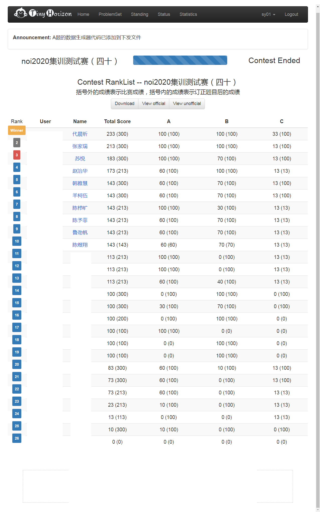
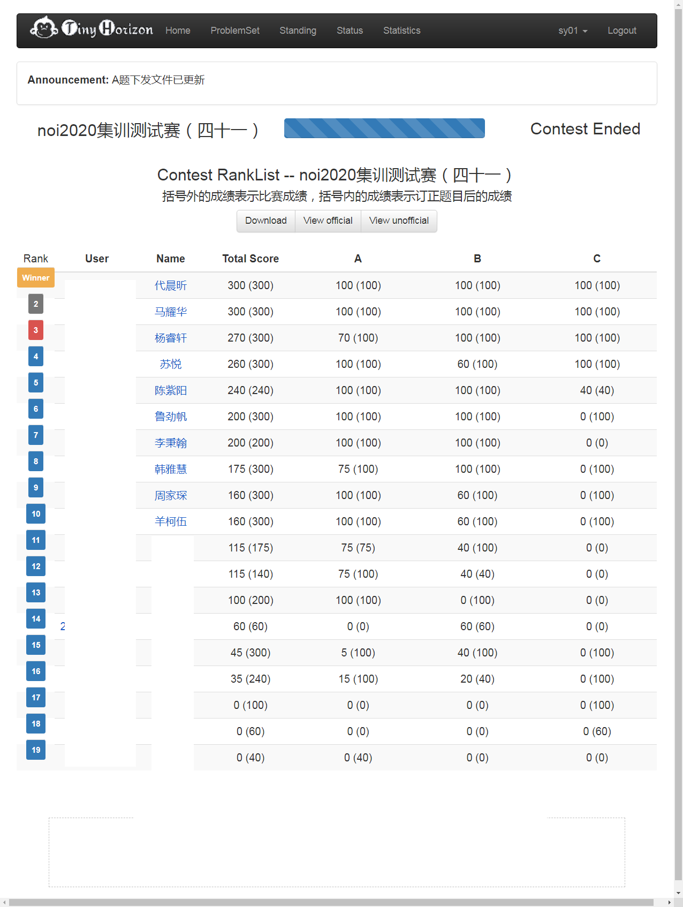
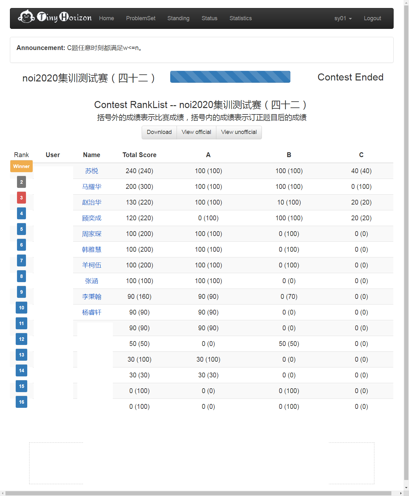

……的一些碎片。
NOI之前我哥问我目标，当时我半开玩笑地说争取不开倒车
……结果flag倒了，也没能打破自己Day2永远崩盘的神话。
要是自己没挂的话还可以说自己是摸到集训队线的男人 虽然会因为惨不忍睹的联赛成绩被同分选手挤出集训队
（UPD：发现金牌线内有一些前国家队成员，所以其实银牌前几名也会被补选为国家集训队）
但哪有如果不挂的理由呢。
一年不挂并不意味着NOI不挂能成为自己的普遍规律。
Day -???
省赛崩盘，day2完挂（200分->10分）
在想明明自己曾经已经打算AFO，为什么还要回头。
水知乎时发现了dmy都拦不住的北京连任队长EntropyIncreaser。
在他“让大家一起进队”的呐喊面前，感觉自己是如此的渺小。
Day -7
打了一场自测模拟赛把自己打自闭了。
那一晚大半个晚上都在翻来覆去地想自己还能做什么，自己又能做什么。
Day -6 ~ 0



打了几场模拟赛发现自己的排名都挺靠前的？
最后一场甚至获得了校内OJ第一次非并列第一名甚至超过第二的myh40分（别人懒得打了你也好意思说？
今年金牌人数还是和集训队人数一样只有50个，要是51名的话就没有金牌来安慰自己了。。。
分配宿舍时发现舍友是相对熟悉的hjw和yrx，感觉还是舒心不少。
开幕式之后领取密码条，被王之栋发现我的密码条上含有子串Au并被hjw疯狂暗示借你吉言
Day 1
开考后先把自己容易出错的地方和标准做题流程默写了一遍。
A题看完就会75分了，但是一直想不到100分做法。
想着先把暴力打了，结果打的时候发现了正解，顺手1.5h打完+对拍
B题发现送了64分部分分，把他打了。
发现没有什么特殊情况了，就开始想正解。
看着样子相当能启发式合并，想了一会启发式合并，觉得不能做。
决定先看C题。
随手打了36分，发现有16分是区间逆序对，想了半天想不到一个简单做法。
最后想到了莫队+树状数组，但复杂度很高不一定能拿到这16分，于是就线返回去看B题。
想了一会启发式合并，觉得不能做。
于是跑回去把C的那16分打了。
冷静算了一下目前分数，发现我好像有216分？往常Day1金牌线都不到200那我岂不是稳了
还剩40分钟，钻研了一下B有没有什么能做的部分分，但没有什么结果。
最后半个小时对着开场默写的做题注意事项进行了一一检查。
出考场后听见旁边的人说B题是个大水题。
想了一下启发式合并，觉得很能做。
发现自己错过了一道相当可做的题，觉得很失落。
听说yrx他们好像也都做出了B，联系上C白送的50分，估摸着金牌线要上240什么的，觉得自己要垫底了。
但吃完饭后问了一下周围人的估分，发现除了myhdcx两A队爷就没有估分上190的？
说三点能查成绩三点就能查成绩，这次CCF给选手的体验怎么这么好？
进场查成绩时发现自己B挂了16分？
？？？我对着清单一个个检查的怎么可能会错？
调试了一下发现加法越界了。。。
听到旁边的老姐随随便便200+，慌得一匹
回去对照注意事项清单，发现自己刚好就漏了算术越界这一项。
虽然挂成200，却发现dyh167, hjw160, yrx152, dcx240，自己的排名似乎依然挺前的？做梦
晚上公布了一下分数线，包括国家候选队和DE类选手的话240分能有前50，但200分就掉出前100了
那金牌线可能要到230？本来没丢那16分的话或许还可以抢救一下。。。
算上Day 2的Debuff，估摸着进队无望，开始想如何体面的退役，最后得出的结论还是无论怎么样都是要尽可能拿高分。
Day 2
根据惯例，开始担心Day2的Debuff让我拿铜回家（毕竟day1名次比去年还低
在考试前一直在提醒自己：不要挂题。不求有功，但求无过。(flag
我哥也告诉我不要rush正解，一定要拿稳暴力。开场一个小时要是还没开始写代码就输了。
。。。
开场半个小时心态直接崩了。
我TM一分都不会？
我也想挂分啊但我分都没有怎么挂？
拿铜牌就算了，难道今年还打铁回家？
中途来来回回不停地去洗手间洗脸冷静，但好像并没有什么用。
A、B题看着题面把可能有用的数据特点都标出来了，断断续续在纸上写下了一堆（并没有什么用的）性质，绕来绕去始终没有优秀的思路。想了几个假做法，但自然都被卡掉了。
一个又一个小时过去了。
“一个小时还没开始写代码你就输了”一直在我耳边萦绕。
可是我能做的，除了去洗脸冷静以外什么也没有。
两个多小时的时候突然眼一斜看到了什么不对劲的地方——A题有的部分分。
掏出我之前写的假做法，发现全部能构造出方案？
把数据全部看了一眼，然后发现所有不合法的情况确实都是m=n-2的点。
打了数据生成器拍了成千上万组，全部都合法。
想了一会觉得好像确实是能构造出方案的。
45分到手。
做到这里时突然就有点想哭。
铜牌肯定有了，我银牌估计也不会丢了。
……为什么去年的银牌选手会成这样啊……
然后分析了一下m=n-2能够构造出方案的情况，发现好像总是能把食材分成至少两个不同的集合做子问题。
觉得分成两个集合的时候如果两个子问题刚好的话这个问题是一定有解的。但解也有可能并不这样分。
口胡了一下觉得这个条件似乎也很必要，因为如果不能分的话每次m只能删掉一个食材。
打了一个85分的枚举子集和背包，依稀记得这问题好像是npc的应该不会有更好的做法，想了想估计能用bitset优化到满分。
当时已经3小时40分钟了，再手写要支持左移右移的bitset换这15分感觉真的不值。何况自己之前还没写过这种，不知道会碰上什么坑。
尽管如此，发现自己会做这一题时还是有了久违的感动与兴奋。
T2看了一下结论觉得自己大概也会32分了，但是写起来很麻烦就先跑去看T3。
T3看到边权一样的部分分结合弦图（虽然场上并不知道叫这个）的性质搞一搞估计跑波最短路就行。
然后yy了一波B特殊情况，发现假了。
离考试结束还剩20几分钟，估摸着打不完B的暴力就打了的点跑路。
对着开考时写下来的清单检查程序。
最后两分钟时发现自己A的初始化写假了，赶紧一波爆改并编译了一下，顺便暗暗吐槽大样例是真的水。
好像还是第一次如此平静的出场。
虽然就这分，但真的尽力了。
出场后马耀华妈妈问我成绩，告诉她120几，她说其实还可以？
中午吃饭时旁边的在水群，有人说集训队线120，还有说100的
按照惯例，集训队分数线总是要往高猜的。。。
？？我今天反而摸到集训队线了？还打破了Day2崩盘的神话？
虽然摘金无望，但这次总算没有白来？
问了一下旁边人的估分，似乎上100的就两A队爷
估计排名还算靠前，然后就开始了各种浪。。。
。。。
昨天刚表扬完CCF今天就开始放鸽子。。
鸽了一个小时40分钟才放人进去看成绩我哥：小场面小场面
然而发现自己A题喜提0分
测了一下小数据点发现自己直接RE
？？？
眼睛又一斜看到了自己场上最后改的代码——
memset(dish,0,(m+1)*sizeof(dish))
GG。
翻盘还是变成了翻车。
改完之后写了一个spj随手测了一下程序。
发现好像还能多拿5分变成90分?
把自己场上改前的代码也测了一下，发现也有90分？
冷静了一下，发现就算不改，程序正确性好像也并不是我想的那么烂
算是一个教训吧（毕竟能过大样例，改代码之前还是先想想。。）但自己也没有下一次了。。
yrx的A题也爆0了（MLE），把spj借给他测了一下，发现他本来也是有90分的。。。
晚上出了总成绩，Day 1 100+48+52 Day 2 0+12+20 总排名137
flag倒了，最后还是开了倒车
发现二中大家考的都不是很好，挂成这样都进了前三，有些庆幸也有些失落
hjw、dyh、zjr都Ag了，dcx顺利Au
口嗨时算了一下，发现自己如果没挂，两天总分刚好摸到金牌线
我回去把银牌线告诉了yrx，然后他发现算出的分刚刚好够着银牌线，兴奋得在宿舍上蹿下跳。。。
他跑出去看榜了，却发现分数并不是他想的那个样子。。。回来的时候他的神情看得我整个人都颤了一下。。。
有银牌还可以挣扎一下，但没有银牌的话，基本上是告别清北了。
他最后还对hjw说“带着我的那份走下去”。
但实际上有且仅有银牌的我们，在竞赛日渐式微的今天，也走不到那里去了吧。
后来他爸也来了，他爸精神状态看上去也不是很好，但还是说想带他去操场散散心，他最后也没同意。
我看着这冰山一角，感觉家长们真的是操碎了心。
Day 2 之后
并不乐意但还是去了闭幕式领奖，发现给我颁奖的竟然是我哥老师？？开倒车被抓现行
从学校里出来之后父亲说要带我去逛一逛长沙，自己虽然没同意但最后还是被拉去了。
在橘子洲那里父亲主动跑去给我买饮料喝。
发现自己已经好久没有看过父亲的正脸了。余晖中的那张脸，显得疲惫而憔悴。
联想起yrx父亲那天的样子，感觉是如此的相似。
没有救世的能力不是你的错，但给世界以希望后又打碎它就是一种不可饶恕的罪恶了。 ——《三体》
既然前面没有拼命去学，或许我最后几场模拟赛，就不应该拼命去拿哪怕一丝一毫的分。
如果早一点认真起来，如果早一点习惯这种高强度的思考，如果早一点适应回紧张的比赛环境……
但这又有什么用呢？
明确的意识到自己真的退役之后还是很失落，感觉内心少了些什么，空荡荡的。
总以为自己学OI的日子还有很多很多，总以为想做的还有大把时间不着急着做。
但恍然间，自己早已到了路的尽头。
愿当我高考离场再也不学文化课时，不像今日般如此迷茫。
Away From OI.